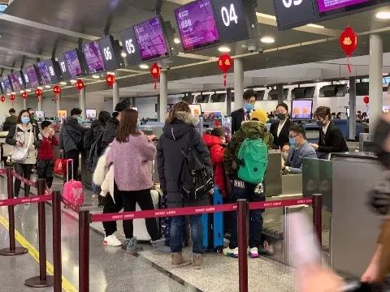

与武汉乘客同机：双方的困境
原文链接 备份链接 2020年1月29日上午9点41分，“杭州发布”通报，1月28日杭州新增确诊人数19名，其中有2名，正是来自1月24日新加坡酷航的TR188航班。 该航班1月24日从新加坡樟宜机场飞往杭州萧山机场，当航班抵达的第二天， …
30.01.2020

本文字数：1810，阅读时长大约3分钟
导读：在民航局出台免费退票政策后，目前国内航司的航班也出现大量退票，航班客座率急剧下滑，某航飞三亚的航班甚至出现了零乘客，但因为回程有旅客还是需要正常飞。
作者 | 第一财经 陈姗姗
第一财经记者今日从多家国外航空公司获悉，受新型冠状病毒肺炎疫情影响，多家外航取消或削减了到中国的洲际航线。

取消时间不一
最新发表声明的是美联航，该公司于1月29日宣布，由于前往中国的旅行需求下降，自2月1日起至9日，美联航将暂停枢纽城市与北京、上海和香港之间的24个往返航班。美联航将继续关注市场需求，并根据需要调整航班计划。
据记者了解，在所有开通中国航线的美国航空公司中，美联航涉及航线服务最多，不过其暂停的24个往返航班并不是其所有中国航线。
1月30日，美国另外两家大型航司美国航空和达美航空也陆续发布削减中国航班计划。
其中美国航空暂停2月9日到3月27日的洛杉矶到北京和上海的航班，但保留了达拉斯到上海和北京以及洛杉矶到香港的航线。
达美航空则宣布从2月6日到4月30日，将中国航班从每周42班减少到21班，具体调整到航线会在2月1日公布。
加拿大航空也宣布从1月30日起到2月29日期间，暂停往来中国北京和上海的直航航班。已购买加航机票的乘客，将得到加航的通知和协助改成其他航司，或者全额退款。目前加航有多伦多、温哥华和蒙特利尔到北京和上海的直飞航班，每周33个。
欧洲方面，汉莎航空集团停飞的开始时间最早。公司称基于对目前现有的冠状病毒疫情信息进行全面细致的评估后，决定从即刻起至2月9日，全面暂停旗下德国汉莎航空公司、瑞士国际航空公司以及奥地利航空往来中国大陆的航班。来往欧洲及香港的航班将如期执飞。汉莎航空集团将持续关注疫情并与相关当局保持密切联系。
今日，汉莎、瑞航及奥地利航空旗下航班将于停飞前最后一次正常从欧洲飞往中国大陆目的地。目的在于令乘客如期出行并把目前在中国大陆执勤的机组人员带回德国、瑞士和奥地利。
目前，汉莎航空集团每周提供54个航班从德国、瑞士以及奥地利飞往中国大陆的五个目的地（北京、上海、南京、沈阳、青岛），此外每周还提供19个航班飞往中国香港。
所有于1月23日前及当日选购汉莎航空集团（航班号为LH LX或者OS），出发日期为1月24日至2月29日之间来往中国大陆航班的乘客可以选择免费改签原航班一次或者退票。改签航班的出行日期至少可以延至2020年9月30日。
英国航空则暂停了飞往中国内地所有航点的航班至2020年3月1日，不过往返中国香港的航班暂时不受影响。
法荷航集团方面，除暂停运营所有飞往武汉的航班外，法航宣布，受旅客需求影响，自2020年1月31日起，法航上海和北京航线将缩减到每天一班。凡在2月29日前预定的前往中国的旅客可申请办理免费退款或将行程改期到2020年5月31日以后。
荷兰皇家航空1月30日起暂停成都，杭州航线，上海航班由每周11班减至7班，1月31日起暂停厦门航线，北京航线维持每周7班不变，以上措施维持到2月29日。
芬兰航空则宣布取消南京航班和北京大兴航班。将于2020年2月5日至3月29日期间取消赫尔辛基往返北京大兴国际机场的每周3班，以及2月8日至3月29日期间赫尔辛基往返南京的每周2班航班运营。
芬航方面表示，尽管卫生部门尚未对中国发布任何旅行限制，但公司仍需要取消相关航班，以降低中国政府暂停团队旅游及“机票+酒店”旅游对北京大兴航线和南京航线的客座率带来的影响，但芬航赫尔辛基往返北京和上海及广州和香港的航班运营不受影响。
国内航班也难飞
昨天，国家移民管理局还发布了官方通告，确认并整理了一些国家对中国公民采取入境限制措施。

在此之前，我国的港澳地区也已经暂停个人旅游签注，香港则削减了往返内地的一半航班。
自1月30日起，塞班岛也暂停了所有来自大陆地区的旅客入境（无论其国籍，包括直飞和中转），据记者了解，今日有不少国内航司是空机飞到塞班，然后接上仍在塞班的旅客回国，不过未来几天不少塞班的航班被取消。
另据记者了解，在民航局出台免费退票政策后，目前国内航司的航班也出现大量退票，航班客座率急剧下滑，某航飞三亚的航班甚至出现了零乘客，但因为回程有旅客还是需要正常飞。
当然，也已经有大量国内航班被取消，比如28日就有近两成国内航班被取消，包括京沪等大城市。根据航班管家的统计，1月29日，中国国内取消航班5445架次，取消占比39.51%，中国国内至国际/的确取消航班156架次，取消占比10.34%。
【推荐阅读】
UP主实拍：“空城”武汉的物价、交通 、生活状态


原文链接 备份链接 2020年1月29日上午9点41分，“杭州发布”通报，1月28日杭州新增确诊人数19名，其中有2名，正是来自1月24日新加坡酷航的TR188航班。 该航班1月24日从新加坡樟宜机场飞往杭州萧山机场，当航班抵达的第二天， …
原文链接 备份链接 非常时期，武汉成了全国人民挂念、祈福的城市。封城后，武汉人民的真实生活是什么样？ 正和岛自1月26日起特别推出《叶青：我在武汉疫区的第N天》专栏。叶青是一位定居武汉40年的市民，也是一名学者和官员。接下来的一段时间，他 …
原文链接 备份链接 虽然感染确诊人数不多，但因“非典”时期香港淘大花园E座数百人染病事件，不少港人情绪紧绷，他们期待一系列尚未落地的防疫措施能切实见效 文 |《财经》特派记者 焦建 发自中国香港特区 编辑 | 苏琦 1月30日早上7点30 …
原文链接 备份链接 澎湃新闻记者 汤琪 武汉市文化和旅游局1月27日凌晨发布的一封信，公布了目前仍在境外的武汉游客数量：4096名。 已经滞留在新加坡4天的武汉人李姝然就是其中之一。 1月19日，当她落地新加坡时，武汉市卫健委官网公布的新 …
原文链接 备份链接 28.01.2020本文字数：2613，阅读时长大约4.5分钟 导读：今日武汉市文化和旅游局也表示，目前尚有4096名武汉游客在境外。 作者 | 第一财经 陈姗姗 权小星 26日晚，湖北省人民政府新闻办公室就新型冠状 …